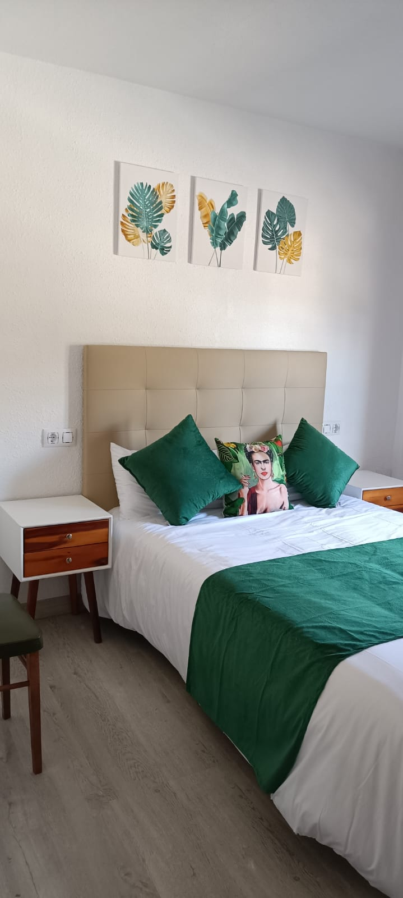
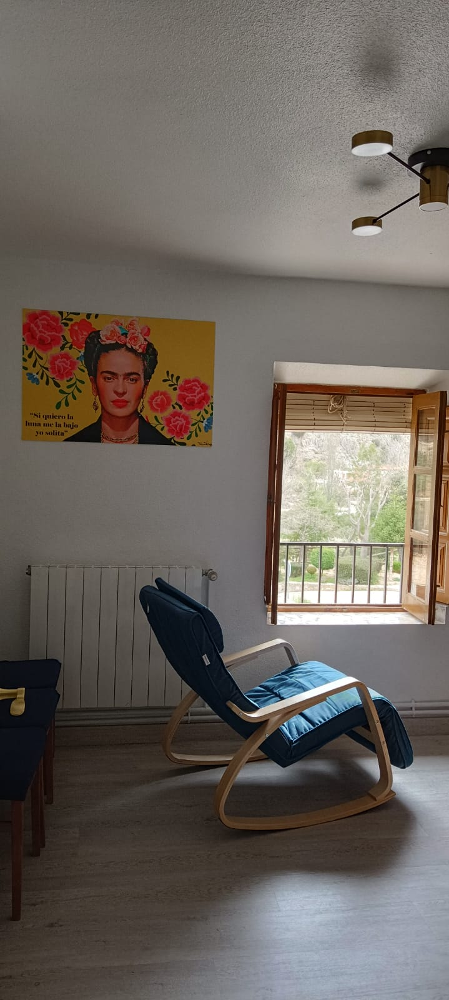

Planta Baja · 5 Plazas
"Si quiero la luna me la bajo yo solita"
Casa Frida es un apartamento amplio y familiar situado en la planta baja, al que se accede cómodamente a pie de calle por su parte trasera. Comparte la misma frescura en verano y calidez en invierno que sus casas hermanas.
Su atmósfera inspiradora rinde homenaje a la fuerza creativa de su tocaya. Cuenta con una distribución ideal para familias o grupos de amigos: una habitación doble, una de matrimonio y una acogedora zona de recepción que incluye un sofá cama individual adicional.
El salón se integra perfectamente con la cocina en un espacio abierto, creando un entorno ideal para compartir momentos y crear recuerdos inolvidables.
Equipamiento
- Habitación 1: 2 Camas de 105cm, armario y sábanas.
- Habitación 2: 1 Cama de 135cm, armario y sábanas.
- Recepción: Sofá cama individual.
- Salón + Cocina: TV Plana, Vitrocerámica, Microondas, Tostador, Frigorífico, Cafetera Italiana con monodosis y menaje completo.
- Baño Completo: Ducha amplia, toallas y productos de aseo.
- Climatización: Calefacción central y ventilador para el verano.
- Servicios: Wifi gratuito, Parking gratis.
- Seguridad: Extintor, Alarma de Humos.
- Lugar libre de humos.


